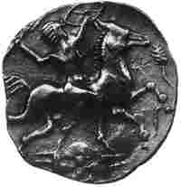
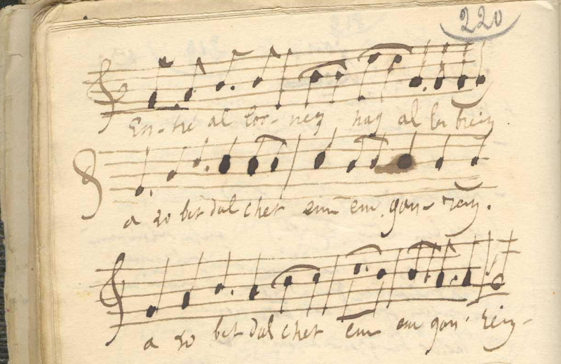
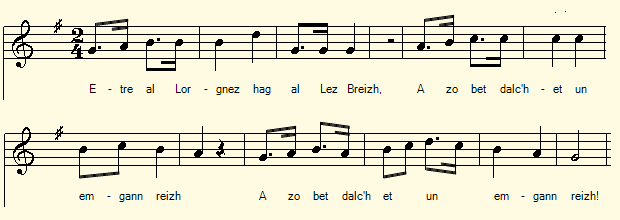

Lez-Breizh
Ton 1
(Mélodie du Barzhaz, en sol majeur, arrangt MIDI: Chr. Souchon)

Ar C'himiad An Distro Marc'heg ar Roue Morian ar Roue Ar Roue Al Lean
Les strophes en caractères gras sont reprises des carnets 2 et 3.
Les strophes en italiques ont été ajoutées à "Marc'heg ar Roue" en 1845.
AR C'HIMIAD
|
39. Marc'heg Lez-Breizh oa souezhet bras
|
56. - Breur all war an douar n'em
eus ket
|
|
I
|
104. - Gwelet pet zo anezho rit-te
|
|
I
|
164. Pa varc'hekent er sal, tal-ouzh-tal,
|
|
193. An aotrou Lez-Breizh, un deiz a oe
|
203. Nemet d'ar marv na afac'h se !
|
|
I
|
242. - Mar ro din liv an Aotrou
Doue
|
Eléments tirés des carnets 2 et 3
Material drawn from Copybooks 2 and 3
En italiques, strophes (groupes a, b, c) non exploitées dans le Barzhaz|
Carnet 2
Page 52 Lesbreiz (variantes) 74. ‘N Aotrou Lesbreiz a lavare D e bajig bihan un deiz a oe. 75. - Harnezit din-me va inkane Ha ma ean da c’hout ar c’hwirionez. (a) - Atrou Lezbreiz, mar am c’hredit Da Balestina c’hwi ned a ket. Rak hen eo karget a C’hallaoued A zo trec’h mad d’ar Vretoned. [ =”Gwai gwenn alar” C2 p. 154/83 , st. 5 - Da [ goadestin ] Balestin me a yalo. (210.) Bez Gallaoued pezh a garo! *** 107. - Bonjour Koad-a-Skin! - Lesbreiz! Hag e teuit ho-unan d’an arme? 108. - N’on ket deuet ma-unan d’an arme. Ma pajik bihan zo deuet ivez. Page 53 / 27 109. - M'am-eus lizher digant ar Roue Ober gantañ... Lezebré... 110. - Mar eo ul lizher digant ar Roue C’hwi a ziskouezo din-me ane[zhe]. 115. Fallañ poulounnek zo em bandenn [ ="poloudenn"="grumeau"?] (b) Hallfe ket al lizher dont da lenn Ha te n'en-dout 'med un azen. - Mar on-me azen a dra zur Ned'on ket azen dre natur. Ma zad a gonter oa'n den fur. 117. Mar n'ho-peus ket añvet ma zad Me a rei d’hoc’h anvout e vab (c)- Pe d'ar c'hentañ tan, pe d'ar c'hentañ gwad E vije konkluet ar stourmat? - Na da c'hentañ tan, na da c'hentañ gwad! Me n'on ket deuet amañ d’an ebat! Buhez ‘vit buhez a vez mad. Page 54 - Atrou Lezobre mar am lazhit Me a rekomand deoc'h ma fried. Ma fried ha ma bugale Me a rekomand deoc’h anezhe : - Lez da bried ha da vugale! Erbedi ( rekomand ) da ene da Zoue! Rak, sur, me am-bezo anezhe... Taolomp bremañ hor mintili Hag eomp bremaik da c’hoari! 105. Stok da gleze deus ma hini Ka losk hon hardi da c'hoari! 125. .... E bourc’h Prijent nep a vije. 126. Gwelet Lezobre war e borpant Oc'h emgannañ deus c’hwec’h ha kant. Hag o lazhañ en un instant. 128. Kriz vize ar gallon na ouelje E Zantez Ana nep a vije 129. O velet an iliz o leizhañ ( se mouiller ) Ha daoulagad Lezebreiz o ouelañ. 130. Trugarekat Santez Ana! Page 55 / 28 131. - O trugarekaat, Santez Ana! C’hui ho-peus gounet ar gounid-mañ. 90. Me a breno deoc’h un donezon Hag a vo kaer doc’h deiz ar pardon. ********************************** Carnet 2 Page 217 / 130 Lesbrez variantes 88. Ne oan ket triwec'h bloaz echuet, … 87. - Dre ho kras, Santez Ana b[enn]iget, Mar roit din gounit an naontekvet, 93. Me a roy deoc'h ur banniel ruz, A vezo galoñset en daou du, 95. Ha chomin ur bloaz d’ho servijiñ Ha skubo ho ti war ma daoulin. Hag e gerc'ho dour en ho piñsin. 96. - Kerzh eta d'an emgann, Lebreiz, Ha me a yelo kerkent ha te! - *** 103. - O, ma mestrik paour, droug ho difenn! - 105. - Ha stok da gleve ouzh va hini! Ha sailh d’an emgann kerkent ha me! 106. Markis Koatorgé a lare Da markis [Lesbreiz] en deiz-se: page 218 107.- O Lesbrez - da unan out deuet d'an arme? - N'on ket deuet ma-unan d’an arme: 108. Doue hag ar Verc'hez zo ganin-me, Ha Santez Ana kerkent ha me. - 123. Ar gentañ taol en-deus c’hoariet, Markis Koatorgé, zo douaret. Ha pemzek deus e soudarded. = [ Entre parenthèses: ] Louisa Karré, à Kerlan, près de Kerauffret [ en 22110 Plouguernével (Rostrenen)] / Youenn Brigon, à Lanriven [ Lanrivain près de St-Nicolas-du-Belem ] au bourg. ********************************** Les Breiz (d) - Me am-eus daouzek a vugale Te c'h-eus lazhet nep o mage Ha souten an arme a roue... - Na kasit dezhe ma roched leun a gwad Ha te welo mar am-eus ur mab [?]. 99. Ar pajik bihan oa en tu-all A ziskare mui pe gement-all. page 220 (avec mélodie de F. Silcher) 72. Etre al Lornez hag al Les-Breiz A zo bet dalc’het un emgann-reiz. A zo bet dalc’het un emgann-reiz. ********************************** Carnet 3 Page 56 Variantes de Lesbreiz 255. Vel ma oa echu ar seizh bloaz a-grenn, Digouez gantañ un intron wenn: 251. E dreid kigned ha pa welaz Na gant truez outañ hi a ouelaz: = 257. - Deuz amañ, va mab, deuz va mab ker, D’az zisammañ a rin ha disamm a vo Breizh. (*) 256. Me eo da vamm gaez, Santez Ana, Deuz beteg ennon, va mab Lesbreiz!. ( En marge à droite verticalement ) 258. Ur re a gisaihl aour ha dir a gemeraz, Hag ar chadenn houarn a droc’haz, Précédé des mots: "Ar bazh-valan" |
Carnet 2
Page 52 Lesbreiz (variantes) 74. Le seigneur Lezbreiz disait Un jour à son petit page: 75. - Harnachez-moi mon cheval d'amble Je m'en vais savoir la vérité (a) - Seigneur Lesbreiz, si m'en croyez En Palestine vous n'irez point. Elle est infestée de Français Qui l'emportent en nombre sur les Bretons... [ =”Les Oies blanches dites 'alar'” C2 p. 154 / 83 , st. 5 ] - En [ goadestin ] Palestine je me rendrai (210.) Qu'il y ait ou non des Français! *** 107. - Bonjour Bois-Lesquin! - Lesbreiz! Venez-vous donc seul au combat armé? 108. - Non je ne suis pas seul. Mon petit page m'accompagne. Page 53 / 27 109. - J'ai une lettre de la part du roi ....faire... Lesbreiz... 110. - Si vous avez une lettre de la part du roi Vous allez me la montrer. Au pire soudard de ma bande. ["poloudenn"="grumeau"?] (b) Non pas! Cette lettre vous la lirez d'autant moins Que vous n'êtes rien de moins qu'un âne. - Si je suis un âne, il est sûr Que je ne le suis de nature. Mon père était, dit-on, un sage. 117. Si vous n'avez connu mon père Vous allez connaître son fils. (c) - Est-ce au premier coup de feu ou au premier sang Que s'achèvera l'assaut? - Ni au premier feu, ni au premier sang. Je ne suis pas venu m'amuser! Ce sera ma vie contre la votre. Page 54 - Seigneur Lezobré si vous me tuez Je vous recommande mon épouse Mon épouse et mes enfants Je vous les recommande: - Laisse là ton épouse et tes enfants! Et recommande ton âme à Dieu! Eux, bien sûr, j'en prendrai [soin]... Jetons à présent nos manteaux Et que le duel commence. 105. Frappe ton épée contre la mienne Et battons-nous hardiment! 125. ... Au bourg de Plévin [?] quel qu'il eût été. 126. En voyant Lezobré en pourpoint Se battre contre 106 adversaires. Et les tuer en un tournemain. 128. Cruel le coeur qui n'eût pleuré A Sainte-Anne quel qu'il eût été 129. Voyant l'église toute mouillée des larmes Que les yeux de Lesbreiz versaient. 130. Merci à vous, Sainte Annne! Page 55 / 28 131. - Sainte Anne, merci à vous! Cette victoire, c'est la vôtre 90. Je vous achèterai un ex-voto Pour orner votre autel les jours de pardon. ********************************** Carnet 2 Page 217 / 130 Lesbréz variantes 88. je n'avais pas 18 ans révolus, … 87. - Par votre intercession, Sainte Anne bénie, Si vous m'accordez une 19ème [victoire], 93. Je devrai vous offrir une bannière rouge, Qui sera galonnée des deux côtés, 95. Et je resterai une année à vous servir Et je balaierai votre sanctuaire à genoux. Et j'airai quérir de l'eau pour votre bénitier. 96. - Marche donc au combat, Lesbreiz, Je te suivrai, te suivrai où tu iras! - *** 103. - O, mon pauvre maître, la colère vous défende! - 105. - Frappe ton épée contre la mienne! Et cours sus à l'ennemi, comme tu me vois faire! - 106. Le marquis Bois-Orgé disait Au marquis Lezobré ce jour-là: page 218 107.- O Lesbrez - es-tu venu combattre seul? - Je ne suis pas venu combattre seul: 108. Le Seigneur Dieu et la Vierge m'accompagnent Et Sainte Anne m'assiste également - 123. Dès le premier coup d'épées, Le marquis Bois-Orgé gît à terre. Avec quinze de ses soldats = [ Entre parenthèses: ] Louise Carré, à Kerlan, près de Kerauffret ( en 22110 Plouguernével (Rostrenen)) / Yves Brigon, à Lanriven ( Lanrivain près de St-Nicolas-du-Belem ) au bourg. ********************************** Les Breiz (d) - J'ai une douzaine d'enfants Tu viens de tuer leur père nourricier Ainsi que le soutien armé du roi... - Envoie-leur ma chemise ensanglantée Et tu verras si j'ai un fils...- . 99. Le petit page de son côté Abattait autant de besogne, sinon plus. page 220 (avec mélodie) 72. Entre Lorgnez et Lesbreiz A eu lieu un duel dans les règles. A eu lieu un duel dans les règles. ********************************** Carnet 3 Page 56 Variantes de Lesbreiz 255. Quand les 7 ans furent complètement achevés, Une dame blanche vint à lui: 251. Et quand elle vit ses pieds écorchés Elle versa des larmes de compassion: = 257. - Viens ici mon fils, mon cher filsr, Je vais te délivrer et délivrée sera la Bretagne. (*) 256. Je suis ta chère mère, Sainte Anne, Viens jusqu'à moi, mon fils Lesbreiz!. ( En marge à droite verticalement ) 258. Elle prit une paire de ciseaux d'or et d'acier, Et elle trancha la chaine de fer, (*) Précédé des mots: "Ar bazh-valan" (le marieur) |
Notebook 2
Page 52 Lesbreiz (variants) 74. Lord Lezbreiz said One day to his little page: - Harness my palfrey I'm going to the trial. (a) - Lord Lesbreiz, if you trust me To Palestine you shall not go. It is teeming with French Who outnumber the Bretons ... [= "The Snow Geese also called 'Alar'" C2 p. 154 / 83, st. 5] - To [ Goadestin ] Palestine I will go, (210.) Whether or not there are Frenchmen there! 107. - Hello Bois-Lesquin! - Lesbreiz! Did you come alone to fight in armed combat? 108. - No, I am not alone. My little page accompanies me. Page 53 / 27 109. - I have a letter from the King ....to do ... Lesbreiz .. . 110. - If you have a letter from the king Will you please show it to me? To anyone in my band I would ["poloudenn" = "sauce lump"?] (b) To you, I would not. All the less so As you are but a donkey. - If I am a donkey, to be sure I was not born so: My father was, so they all say, a wise man. 117. If you did not know my father You will make the acquaintance of his son. (c) - Are we going to fight until first blood? Or until the first shots are fired? - Neither first fire nor first blood. I did not come to have entertainment! It will be my life against yours. Page 54 - Lord Lezobre, if you kill me, May I recommend you my wife, My wife and my children? May I recommend them to you?: - Leave your wife and children alone! But recommend your soul to God! Of your kin, of course, I'll take [care] ... Now let's take off our coats And let the fight begin! 105. Strike your sword against mine And let's fight boldly! 125 ... In the village of Prigent whoever was. 126. Seeing Lezobré in doublet Fight against 106 opponents. And kill them in a jiffy. 128. Cruel-hearted was who had not cried In Saint-Ann Church, whoever he was 129. Seeing the church wet with tears That Lesbreiz's eyes were pouring out. 130. Thank you, Saint Ann! Page 55 / 28 131. - Saint Anne, thank you! The present victory is yours 90. I will buy you an ex-voto To adorn your altar on Pardon days . ********************************** Notebook 2 Page 217 / 130 Lesbrez variants 88. I was not 18 years old, ... 87. When, by your intercession, blessed St. Ann, If was granted my 19th [victory], 93. I promise you a red banner, Adorned with braid stipes on both sides, 95. And I'll stay a year to serve you And I will sweep your sanctuary on my knees. And I will fetch water to fill your stoup 96. - You may go to battle, Lesbreiz, I will follow you, follow you wherever you will go! - *** 103. - O, my dear master, Your anger be your shield! - 105. - Hit your sword against mine! And run over to the enemy, just as I do! - 106. Marquis Bois-Orgé said To Marquis Lezobré that day: page 218 107. - Lesbrez, have you come to fight alone? - I did not come to fight alone: 108. The Lord God and the Virgin accompany me And Saint Ann also assists me - 123. From the first stroke of swords, The Marquis Bois-Orgé lay on the ground. With fifteen of his soldiers. = [In brackets:] Louise Carré, at Kerlan, near Kerauffret [near Plouguernével (Rostrenen)] / Yves Brigon , in Lanriven |
**********************************
Les Breiz
(d) - I have a dozen children
You just killed their father and their support in life
As well as the armed support of the king ... -
Send them my bloody shirt
And you'll see if I have but a son ...-
99. The little page on his side
Slaughtered as much, if not more.
Page 220 (with music by F. Silcher)
72. Between Lorgnez and Lesbreiz
There was a regular fight.
There was a regular fight.
**********************************
Notebook 3
Page 56
Variations to the Lesbreiz song
255. When the seven years were completely completed,
A white lady came to him:
251. And when she saw his skinned feet
She shed tears of compassion:
=
257. - Come here my son, my dear son,
I will relieve you relieved will be Brittany. (*)
256. I am your dear mother, Saint Anne,
Come to me, my son Lesbreiz !.
(In the right margin vertically)
258. She took a pair of gold and steel shears,
And she cut off the iron chain,
(*) Précédé des mots: "Ar bazh-valan" (the matchmaker)


Mélodie de "Lez-Breizh" notée de la main de La Villemarqué , carnet 2, page 220 et transcription (str. 72)